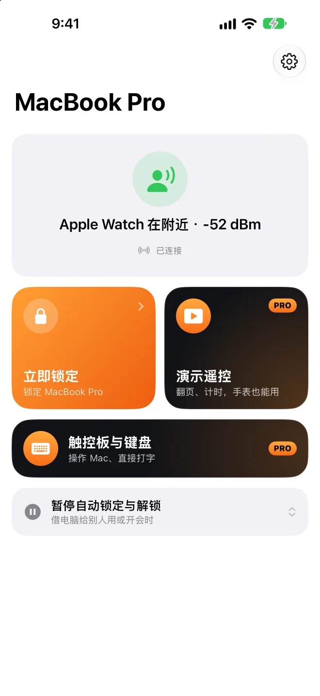
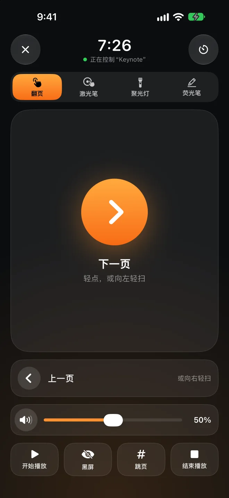

人一走，就锁上。人回来，就打开。
Presence 是 Mac 菜单栏里的一个小工具。它监听你随身的 iPhone 或 Apple Watch 本来就会发出的蓝牙信号：信号变弱，屏幕就锁上；你走回座位，它帮你解开。手机和手表上不用装任何 App。
Mac 版免费、开源，需要 macOS 26 或更高版本。
自动解锁 走到这里
几秒后锁定
Apple Watch 在附近−52 dBm
把你往右拖，看看 Mac 什么时候锁上，然后再走回来。
宁可晚一点解锁，
也不要锁错。
蓝牙信号会跳动，人转个身就能差好几格。Presence 遵循几条保守的规则：你坐着不会被锁，别人也进不了你的 Mac。
看几秒的走势，不看单次读数
取最近 4 秒信号的中位数，至少要有 3 个读数。某一次突然变强或变弱，都不算数。
锁定和解锁用两条线
锁定阈值比解锁阈值低一截，站在中间也不会一会儿锁、一会儿开。每台设备都可以单独校准：在你希望解锁和希望锁定的位置各站 8 秒就行。
你还在打字，就先不锁
信号变弱了，但键盘或鼠标还有人在用，就先暂缓锁定。
解锁前先问 iPhone
装了 Presence Remote 的话，Mac 在输入密码前，会先请 iPhone 用配对时交换的密钥来回答。只伪造蓝牙信号，解不开你的 Mac。
让 Apple Watch 先解锁
要解锁时先等几秒，让 macOS 自带的“用 Apple Watch 解锁”先来；Mac 还锁着，Presence 才帮你输入密码，而且每输入一段都会先确认屏幕还停在登录界面。
该锁时就锁，不该锁时别添乱。
这些都在 Mac 版里，免费。
演示时不会锁屏
Keynote 或 PowerPoint 正在放映时，自动锁定会暂停。走上台、离电脑远了，投影上也不会突然变成登录界面。
在家不用锁
连着信任的网络、接着电源，或者不在你设定的时间段内，就不自动锁定。网络靠路由器识别，不需要定位权限。
暂停一会儿
把电脑借给别人用，或者去开会时，可以暂停 15 分钟到 4 小时。时间到了你不在，就马上补锁。
有人趁你不在解锁，你会知道
你不在附近时，有人手动解开了你的 Mac，事件记录里会记下来，还可以拍照取证、通知你的 iPhone。
今天坐了多久
在座时间会自动记下今天和最近 7 天，坐太久会提醒你起来活动一下。
从 BLEUnlock 换过来
Presence 的思路来自 BLEUnlock，针对新版 macOS 重新编写。用过的话，可以一键导入设备和阈值。



上台以后，手机就是翻页笔。
不用另外买遥控器，也不用插接收器。在手机上移动手指，大屏幕上同一个位置就会出现红点、聚光灯或荧光笔的线。直接在下面这部手机上试试看。
选择激光笔、聚光灯或荧光笔，然后在手机的触控区按住并移动。荧光笔的线几秒后会淡去，翻页时立刻清除。
轻点或滑动就能翻页
还可以跳页、黑屏，开始和结束播放。
手机锁着也能翻页
锁定屏幕和灵动岛上有翻页按钮，不用解锁手机。
Apple Watch 也是翻页笔
轻点、转动数码表冠或互点两下就能翻页。向左滑一页，可以调节 Mac 的音量。
演讲倒计时
设好要讲多久，剩 5 分钟和时间到时，手腕上会轻敲提醒你。
调节 Mac 的音量
幻灯片里的视频太响或太轻，不用走回电脑旁。大屏幕上也不会弹出音量图标。
什么演示软件都行
Keynote、PowerPoint、Google 幻灯片、PDF 都可以。红点和聚光灯画在最上层，不会点到任何东西。
锁定是免费的。翻页笔才要钱。
Mac 版和 iPhone、Apple Watch 上的 Presence Remote 都可以免费使用。只有演示遥控属于 Presence Pro。
Presence Remote
iPhone 和 Apple Watch 的配套 App。
- 从手机、手表或控制中心立即锁定
- 暂停与恢复自动锁定
- Mac 被锁定、有人解锁时通知你
- 解锁前的加密确认
Presence Pro
演示遥控：翻页、激光笔、聚光灯、荧光笔、音量、演讲倒计时，iPhone 和 Apple Watch 都能用。
两种订阅都可以免费试用 7 天，三种都支持家人共享。实际价格以你所在地区的 App Store 显示为准。
在 App 内升级你的 Mac，只听你的手机。
没有账户，也没有服务器
Mac 和手机只通过蓝牙直接通信，不经过互联网。开发者收不到你的任何数据。
每条指令都加密
配对时会生成一把只有你的设备才有的密钥，所有指令和状态都用它加密、验证。别人的手机发不了指令。
密码只存在你的钥匙串里
自动解锁要用的登录密码保存在你 Mac 的钥匙串里，而且 Presence 会先确认密码正确才保存。
代码公开
Mac 版完全开源，怎么判断、怎么解锁，都可以自己看。
常见问题
手机一定要装 App 吗？
不用。Presence 读取的是 iPhone 和 Apple Watch 本来就会发出的蓝牙信号，只装 Mac 版就能自动锁定和解锁。装了 Presence Remote，还可以从手机远程锁定、接收通知、在解锁前加密确认；升级到 Presence Pro 再加上演示遥控。
需要什么设备和系统？
Mac 需要支持低功耗蓝牙（Bluetooth LE），并运行 macOS 26 或更高版本。Presence Remote 需要 iOS 26 或 watchOS 26 及更高版本。也可以只用 Apple Watch，或者其他会定期广播、地址固定的蓝牙设备。
跟 Mac 自带的“用 Apple Watch 解锁”有什么不同？
自带的功能只负责解锁，你离开时不会锁。Presence 两件事都做；要解锁时还会先等几秒，让手表先解锁，手表没解开才帮你输入密码。两者可以一起用。
我坐着不动，会不会突然被锁？
信号要连续几秒都太弱才会锁，而且锁定阈值比解锁阈值低一截。检测到你还在打字或用鼠标，也会先暂缓。如果还是太敏感，在“设备”页面重新校准就好。
为什么 Mac 版不在 Mac App Store 上架？
自动解锁需要模拟键盘输入登录密码，Mac App Store 的 App 不允许这样做。所以 Mac 版经过 Apple 公证，从 GitHub 下载，以后的新版本会自动更新。
演示遥控支持哪些软件？
翻页发送的是方向键，Keynote、PowerPoint、Google 幻灯片和 PDF 阅读器都能识别。激光笔、聚光灯和荧光笔是 Presence 画在屏幕最上层的，不管投影的是什么 App 都能用。使用前要先在 Mac 上的 Presence 中打开“手机与手表 › 允许演示遥控”。
会很耗电吗？
iPhone 和 Apple Watch 本来就会发出这些信号，Presence 只是在 Mac 上监听。Mac 这边平时的 CPU 占用不到 1%。